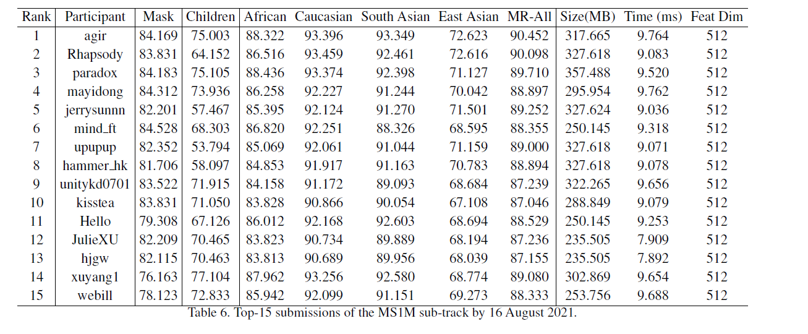

Masked Face Recognition Challenge The InsightFace Track Report (戴口罩人脸识别挑战赛)
摘要
在 COVID-19 冠状病毒流行期间，几乎每个人都戴着口罩，这对深度人脸识别提出了巨大挑战。 在本次工作中，我们组织了戴口罩人脸识别 (MFR) 挑战赛，并专注于口罩存在情况下对深度人脸识别方法进行基准测试。 在 MFR 挑战中，有两个主要赛道：InsightFace 赛道和 WebFace260M 赛道 [38]。 对于 InsightFace赛道，我们手动收集了一个具有 7K 身份的大规模戴口罩测试集。此外，我们还收集了一个包含 14K 个身份的儿童测试集和一个包含 242K 个身份的多种族测试集。 通过使用这三个测试集，我们建立了一个在线模型测试系统，可以对人脸识别模型进行综合评估。为避免数据隐私问题，未向公众发布测试图像。 由于挑战仍在进行中，我们将继续更新排名靠前的解决方案以及这份关于 arxiv 的报告。
引言
最近，通过大规模训练数据 [14, 24, 1, 39]、复杂的网络结构 [26, 16] 和先进的损失设计 [28, 29, 26, 25, 8, 20] 在人脸识别方面取得了很大进展 , 31, 30, 4, 3, 18, 6]。 然而，现有的人脸识别系统大多是非遮挡人脸，其中包括主要面部特征，如眼睛、鼻子和嘴巴。在COVID19冠状病毒流行期间，几乎每个人都戴着口罩，这对现有的人脸识别系统构成了巨大挑战。传统人脸识别系统可能无法有效识别蒙面人脸，但摘下口罩进行身份验证会增加病毒感染风险。
为了应对上述戴口罩带来的挑战性场景，改进现有的人脸识别方法至关重要。 通常，有两种方法可以克服戴口罩人脸识别问题：（1）恢复未戴口罩脸以进行特征提取；（2）从戴口罩人脸图像中直接生成遮挡的 但鲁棒性高的人脸特征嵌入。
基于生成对抗网络（GAN）[13]，有许多保持身份的带口罩人脸恢复方法[9, 11]。 在[9]中，戴口罩人脸图像首先被分割，然后在保留人脸结构的全局一致性的同时用精细的面部细节进行修补。Ge et al.[11]提出了身份保留修复以促进被遮挡的人脸识别。核心思想是将 GAN 与优化的预训练 CNN 模型相结合，该模型通过使修复后的人脸靠近其身份中心，作为与生成器竞争的第三个参与者。
由于遮挡恢复方法 [9, 11] 设置在线评估工具包更复杂，我们在这个挑战中专注于遮挡鲁棒的面部特征嵌入。在[36]中，提出了一种新的局部人脸识别方法，通过使用局部纹理集匹配从他们的局部人脸中识别出感兴趣的人。 在[15] 中，通过从未遮挡区域（主要是眼睛和前额区域）中提取深层特征，提出了一种带口罩的 感知人脸特征嵌入。在[22]中，提出了戴口罩人脸增强和额外的口罩使用分类损失来训练戴口罩的鲁棒的面部特征嵌入。在 [19, 35] 中，采用视觉注意机制来增强非遮挡面部区域的特征学习。
尽管对于遮挡（戴口罩）人脸识别已有一些探索，但由于疫情的突然爆发，还没有公开可用的大规模戴口罩人脸识别基准。 在本报告中，我们更进一步，提出了一个新的综合基准，用于戴口罩人脸识别和非戴口罩的人脸识别。为此，我们收集了真实世界的戴口罩测试集、儿童测试集、多种族测试集（即非洲人、高加索人、南亚人和东亚人 [37, 12, 34, 33]）。 我们用固定的训练数据定义不同的子赛道，每个子赛道对计算复杂度和模型大小都有严格的限制。 因此，不同模型之间的性能比较可以是公平的。
通过使用建议的测试数据，我们在 Masked Face Recognition Challenge (ICCV 2021) 中组织了 InsightFace 赛道。本报告介绍了该赛道的详细信息，包括训练数据、测试集、评估协议、基线解决方案、作为比赛一部分收到的排名靠前的提交的性能分析，以及带口罩人脸识别的有效策略。 另一个 WebFace260M 赛道的报告可在 [38] 中找到。
InsightFace Track 数据集
训练集
如表1中所示，我们使用两个现有的数据集（即MS1M [14] 和 Glint360K [1]) 作为训练数据。
MS1M: MS1M训练数据集是从 MS-Celeb-1M [14] 数据集中清洗得到的。所有人脸图像都被 RetinaFace [5] 预测的五个面部标志预处理到 112 x 112 的大小。然后，通过使用预训练的ArcFace [4] 模型和特定种族的注释器 [7] 进行半自动区分。最后，调整后的 MS1M 数据集包含510万张图像，包含93K个身份。
Glint360K：Glint360K训练数据集是从 MS-Celeb-1M [14] 和 Celeb-500k [2] 数据集中清洗得到的。所有的人脸图像都是从互联网上下载的，并通过 RetinaFace [5] 预测的五个人脸关键点预处理到 112 X 112 的大小。 然后，通过采用预训练的 ArcFace [4] 模型进行类内和类间清理，进行自动细化（分清图片所属类别）。 最后，发布的 Glint360K 数据集包含 360K 个人的 17M 图像，这是学术界最大、最干净的训练数据集之一 [39]。
训练数据（即 MS1M 和 Glint360K）是固定的，以方便性能再现和公平比较。详细要求： * 不允许使用外部数据集，也不允许使用预训练模型。 * 所有参与者必须将预定义的训练数据集用于特定的挑战赛道。 允许对口罩进行数据增强，但增强方法需要可复现。
测试集
如表2和图 1 所示，我们手动收集了以下三个测试集，用于对不同算法的综合评估。与现有的人脸识别测试集（例如 LFW [17]、CFP-FP [27]、AgeDB [23] 和 IJB-C [21]）不同，我们的测试集不是从名人那里收集的，因此我们自然可以避免身份识别 -重叠问题。测试集的预处理步骤与训练数据相同。 所有的人脸都使用 RetinaFace [5] 归一化为 112 X 112。 我们还采用半自动方法来严格确保：
（1）大多数测试集是无噪声的，
（2）我们的训练数据和测试集之间没有身份重叠。
Masked Test Set: 戴口罩测试集包含 6,964 个戴口罩人脸图像和 13,928 个不戴口罩人脸图像，这些图像来自6,964 不同的人。总共有 13,928 个正对和 96,983,824 个负对进行验证评估。
Children Test Set： 儿童测试集包含 157,280 张图像，这些图像来自14,344个儿童。这些儿童年龄在 2 到 16 岁之间。总共有 1,773,428 个正对和 24,735,067,692 个负对用于验证评估。
Multi-racial Test Set: 参与者还将在多种族测试集上测试他们的算法，以公平评估不同人口群体的表现。 多种族测试集由四个人口统计组构成：非洲人、高加索人、南亚人和东亚人 [37、12、34、33]。 总共有 160 万张图像，包含 242K 个身份。
InsightFace Track Evaluation Protocols
该测试旨在确定在处理戴口罩人脸、儿童面孔和来自不同人口群体（例如非洲人、高加索人、南亚人和东亚人）的个人照片时，人脸识别性能是否以及在多大程度上有所不同。 同组和不同组之间的所有对都将用于评估。 我们采用 1:1 人脸验证作为评估指标。
Masked Test Set： 在13928个正对和96983824个负对情况下，记录下TPR@FPR=1e-4
Children Test Set: 在1773428个正对和24735037692个负对情况下，记录下TPR@FPR=1e-4
Multi-racial Test Set: 我们按人口统计群体（例如非洲人、高加索人、南亚人和东亚人）评估准确性，并报告真阳性率 (TPR) @ 假阳性率 (FPR) = 1e-6。 每个人口统计组的正对数为百万级，每个人口统计组的负数对数为十亿级。
InsightFace Track Ranking Rules: 为保护数据隐私并确保比赛公平，我们保留所有图片以及测试数据的标签。参与者可以将他们的 ONNX 格式的模型提交到我们的评估服务器，并在在线评估后（通常需要几个小时）从排行榜上获得他们的结果。参与者只能使用我们为特定挑战赛道提供的训练数据。 在广泛使用的 V100 GPU 上，我们设置了推理时间的上限（MS1M 子轨道 < 10 ms/image 和 Glint360 子轨道 < 20 ms/image）来控制模型复杂度和提交的模型大小 应小于 1GB 的 float32 格式。 在我们的在线测试服务器上，我们使用余弦相似度进行验证测试。
MS1M 子赛道的特征维度应小于 512，Glint360K 子赛道的特征维度应小于 1024。所有挑战提交均根据两个测试集（即 Masked Test Set 和 Multi-race 测试集）由公式 0.25 * TPR@Masked + 0.75 * TPR@MR-All。
InsightFace Track 基础解决方案
基线模型的训练细节在挑战赛前发布，以促进参与。 我们重新实现了一个简单的在线戴口罩人脸增强函数 [32]，为基线模型定制 ResNet [16]，并使用 ArcFace [4] 作为我们的损失函数，这是深度人脸识别的最佳方法之一。
Masked Face Augmentation
如图 2 所示，我们遵循 JDAI-CV 工具包 [32] 4 来实现我们的在线口罩生成功能。在输入的 2D 人脸图像上进行 3D 人脸重建 [10] 后，我们获得了 UV 纹理图、人脸几何形状和相机姿势。 然后，我们从收集到的面具数据集中随机选择一个面具并将其投影到 UV 空间中。 基于简单的纹理混合，我们可以轻松得到蒙版的面部UV纹理。 最后，我们将蒙版的面部 UV 纹理和面部几何体结合起来，将蒙版的人脸渲染成 2D 人脸图像。
实现细节
在训练过程中，我们按照 ArcFace [4] 将特征比例设置为 64，并选择 0.5 处的角边距。如表3所示，我们自定义 ResNet [16] 作为我们的基础模型。更具体地说，我们只使用基本残差块而不是瓶颈残差块 ，随后跟着 ArcFace [4]。基线模型由 PyTorch 实现，并在特征和中心上进行平行加速。我们将批量大小设置为 1024 ，并在 8 个 NVIDIA V100(32GB) GPU 上训练模型。 学习率从 0.1 开始，在 10、16、22 个 epoch 时下降 0.1，整个训练过程在 24 个 epoch 时结束。 我们将动量设置为 0.9，权重衰减为 5e-4。在测试过程中，我们只保留没有全连接层的特征嵌入网络，并为每个归一化的人脸裁剪提取 512-D 特征。我们对每个特征对使用余弦相似度度量。
基础性能
如表4所示，我们首先在公共基准上测试我们的基线模型，包括 LFW [17]、CFP-FP [27]、AgeDB [23] 和 IJB-C [21]。 通过将计算复杂度从 R18 增加到 R100，所有测试集的性能都在稳步提升。 将训练数据从 MS1M 更改为 Glint360K 后，IJBC 上的 TPR@FPR=1e-4 从 96.81% 显着增加到 R100 的 97.32%。在 CFP-FP 上，在 Glint360K 上训练的 R100 优于在 MS1M 上训练的对应模型,提升了0.23%，表明侧脸人脸验证可以从更多的训练数据中受益。 相比之下，LFW 和 AgeDB 上的验证准确率几乎相同，这表明 LFW 和 AgeDB 在区分高性能模型任务上已经饱和。
在表5中，我们报告了挑战基准的表现。正如我们从这些结果中看到的，在所有测试场景（即蒙面、儿童和多种族测试集）中，验证准确性受益于更多的训练数据（从 MS1M 到 Glint360K）和更大的骨干结构（从 R18 到 R100）。与公共测试数据集（即 LFW [17]、CFP-FP [27]、AgeDB [23] 和 IJB-C [21]）上的性能差距相比，建议的口罩测试集、儿童测试集 和多种族测试集更明显。 此外，我们还进行了口罩增强实验。 当10%的训练数据在训练过程中戴口罩时，使用MS1M在戴口罩测试集上的验证准确率从69.091%显着提高到77.325%，使用Glint360K从75.567%提高到83.710%。然而，戴口罩人脸增强对不戴口罩的人脸验证略有危害，因为 MR-All 数据集上的 TPR 在 MS1M 子赛道上下降了 0.484%，而在 Glint360K 子轨道上下降了 0.644%。 我们为挑战参与者留下了口罩增强的平衡。
InsightFace Track 的排行榜结果
戴口罩人脸识别竞赛（InsightFace 赛道）作为戴口罩人脸识别挑战赛和研讨会 的一部分在 2021 年国际计算机视觉会议 (ICCV 2021) 上进行。 参与者可以自由选择不同的子赛道来开发人脸特征嵌入模型，该模型在我们的测试服务器上基于上述协议自动评估。该比赛已在全球范围内面向行业和学术机构开放。 到 2021 年 8 月 16 日，InsightFace 赛道已收到来自世界各地的数百个注册。 更具体地说，本次比赛收到了 123 份 MS1M 子赛道的有效提交和 69 份 Glint360K 子赛道的有效提交。 在这里，同一参与者对一个子轨道的多次提交只计算一次。
由于我们将排行榜提交推迟到 2021 年 10 月 1 日，因此我们无法在截止日期之前收集最终排名靠前的解决方案。 比赛结束后，我们将关闭测试服务器，并为每个赛道选择有效的前三名解决方案。 我们将从这些排名靠前的参与者那里收集训练代码，并重新训练模型，以确认每次提交的性能是否有效。 我们将通过 arxiv 更新挑战报告，提供详细的团队信息和详细的顶级解决方案。
到 2021 年 8 月 16 日，我们发现 MS1M 子轨道的最佳模型在掩码测试集上达到了 84.169%，在 MR-All 测试集上达到了 90.452%。 如表6中所示，我们列出了排行榜前 15名的提交。与表5中的基线模型比较，在masked测试集和 MR-All 测试集上有大约 7% 的绝对改进。如表 7所示，对于 Glint360K 子赛道，最佳模型在masked测试集上达到了 88.972%，在 MR-All 测试集上达到了 93.512%。与表5中的基线模型比较。 如图 5 所示，在masked测试集上有大约 6% 的绝对改进，在 MR-All 测试集上有大约 3:5% 的绝对改进。因此，在不降低非戴口罩人脸识别准确率的情况下，训练优化有很大的空间来提高戴口罩人脸识别率。

道德考虑
人脸识别最近一直是一个有争议的话题。关于侵犯隐私的道德问题，以及人脸识别系统识别较深肤色的能力（称为偏见问题），一直存在问题。 在这个挑战的 InsighFace 赛道中，我们使用现有的学术数据作为训练数据集。 训练数据中的大部分身份都是众所周知的名人 [14]。预处理后的训练数据被压缩成二进制记录，只发布给相关研究人员，以促进可重复的训练。 我们的私人测试数据不会向公众发布，以避免数据隐私问题并确保所有参与者的公平性。对于偏差问题，我们遵循 NIST-FRVT 8 建立的最权威的评估。我们希望促进深度人脸识别的公平性，从而建立多种族验证基准。
结论和接下来的工作
在这份 InsightFace 跟踪报告中，我们介绍了评估戴口罩人脸识别和非戴口罩人脸识别的新基准。 基于我们的基线解决方案，我们确认了 naive masked 的有效性面部增强。 由于挑战仍在进行中，我们将继续更新排名靠前的解决方案以及 arxiv 上的这份报告。 除了InsightFace赛道，蒙面人脸识别挑战赛还有平行的WebFace260M赛道9。 WebFace260M赛道由朱征、黄冠、邓建康、叶云、黄俊杰、陈新泽、朱家刚、田洋、郭嘉、陆继文、杜大龙和周杰组织。 详细信息可以在 arxiv 报告 [38] 中找到，将来也会更新。